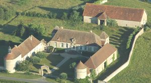
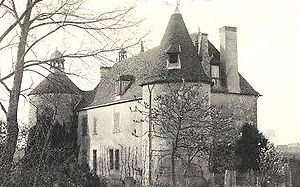
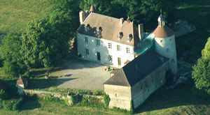
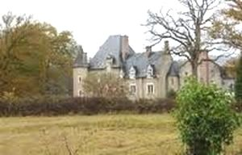
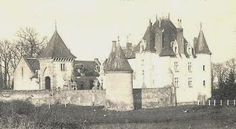
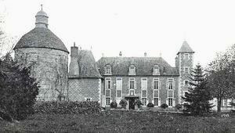

Recensement Jean-Claude Truffet






| Département | 03 — Allier |
| Canton | Moulins |
| Commune | Neuvy |
| Type d'édifice | Château |
| Période d'origine | XVI-XVIII |
Plusieurs châteaux à Neuvy, Montgarnaud du XVIII avec tours médiévals, Neuville du XV-XVIe siècles style néo-renaissance, d'Origny du XIXe siècle, de Vallières du XIV-XIXe siècles, Vieux Mélay du XVII-XVIIIe siècles et le fort de Toury du XV-XIXe siècle. MONTGARNAUD, les premiers détenteurs du fief étaient des seigneurs de Breschard, Confay, Beauvoir, Clusor, en même temps que de Montgarnaud, et baron de Bressolles. Le seigneur de Montgarnaud était en 1412 Jean de Thory. Il y avait une large ceinture de fossés qui enserrait une forteresse sans doute plus importante que le château actuel. Le propriétaire le plus célèbre fut Antoine Minard né à Moulins à la fin du XVe siècle, d'un trésorier général. Montgarnaud comta parmi ses propriétaires des conseillers au présidial de Moulins, Toussaint Brirot en 1670 et Jean Perron vers 1730, des avocats en parlement Jean Lequin de Saint-Ange vers 1765 et un notaire Moulinois Etienne Baraba vers 1760. NEUVILLE Le premier seigneur de Neuville est connu en 1466 par le terrier de Bressolles, et en 1503, l'écuyer Jehan de Maignons reconnaît tenir de la duchesse de Bourbon. En 1579, la seigneurie appartient à Guillaume Ollivier qui épouse en seconde noce Christine de Beaucaire, c'est le frère de celle ci, Rodolphe de Beaucaire, qui lui succède et fait transformer, en 1604, la maison forte, des bâtiments neufs ont été construits et le château abrite le centre de formation professionnelle agricole pour adultes crée en 1973. ORIGNY, pas d'information historique. VALLIERES, il succédait à un château appartenant au XIVe siècle à Jean Cordier, écuyer et seigneur de Vallières. Parmi les Cordier, on trouve un trésorier ducal, un Conseiller du duc et plusieurs Consuls de Moulins. Le dernier Cordier seigneur de Vallières, fut Jean, écuyer, qui possédait aussi Droussy, La Motte et Chapeau. Maître d'hôtel d'Anne de France, châtelain de Moulins en 1510, il mourut sans postérité en 1526. À la fin du XVIIe et au début du XVIIIe siècle, le château resta une cinquantaine d'années aux mains de la famille de Genestoux. Claude de Bouys, avocat au présidial de Moulins, puis receveur général des assignations en la sénéchaussée de Moulins, l'acheta en 1776. Sa fille Marie Eulalie, qui en hérita et le possédait à la Révolution, avait épousé Gabriel de Bonand qui fut deux fois maire de Neuvy.
Montgarnaud, est une gentilhommière du début du XVIIIe siècle avec deux tours rondes aux angles, une tour du XIIIe siècle. Neuville, les deux pavillons qui flanquent le corps de logis principal sont datés de 1600 environ. Le bâtiment principal à un seul niveau et niveau de comble a été construit au XIXe siècle, dans un style néo-Renaissance avec ses grandes ouvertures à meneaux et son avant corps à deux niveaux, pris en uvre dans la façade. Les deux pavillons en retour d'équerre aux angles sont plus anciens et ont été édifiés au XVIIe siècle. Vieux Melay, de style néo-Renaissance est construit en 1840, date à laquelle le petit corps de logis du XVIIe siècle. Le domaine comprend un petit château, ses dépendances agricoles et la chapelle, le tout clos par un mur avec portail. Le bâtiment ne présente qu'un seul niveau avec un rez-de-chaussée. La porte de la façade principale ouvre sur un arc en plein cintre dont l'agrafe porte une tête féminine. Deux pilastres ioniques non cannelés encadrent cette porte.
Origny se présente actuellement comme un logis carré néo-gothique, qui fut construit en 1875. Les douves, sèches, entouraient l'ancien manoir. Neuvy le château de Toury, véritable sentinelle chargée de surveiller la vallée de lAllier, était considéré dès le XIIIe siècle comme un château fort et une des quatre principales baronnies du Bourbonnais. Le château de La Queune fut bâti en pleine vallée de lAllier qui, lors des grandes crues, venait envahir ses caves et son rez-de-chaussée. Le château de Melays, souvent désigné sous le nom de Vieux Melays, fut racheté par le baron des Michels. Son fils embrassa la carrière militaire dès le début de la Grande Guerre.
Famille d'Antoine Minard Famille Guillaume Ollivier"
Château de Montgarnaud de Neuville du Vieux-Melay et de la Vallières à Neuvy